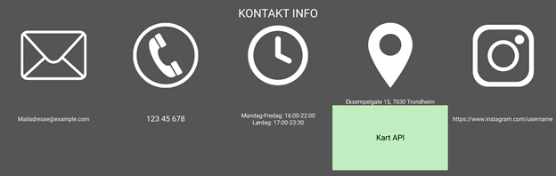

1. Dokumentdetaljer
P2 Design rettningslinjer
Julie, Martin, Sigve, Sindre og Iselin
September 22, 2021
2. Administrative detaljer
Klientens navn: Emilios (fiktiv)
Hans posisjon i selskapet: eier og leder
3. Grunn, mål og målgruppe
Målet med denne nettsiden er å presentere restauranten til Emilio. Vi skal presentere restauranten på en fin og enkel måte slik at det er lett for forbrukeren å få oversikt over hva restauranten har å by på. Nettsiden skal vise menyen og kontaktinformasjonen til Emilio. Det vil også være mulig å bestille bord. Nettsiden er for kunder som er interessert i gresk mat, men som og vil vite mer om restauranten til Emilio.
5. Sideoppsett og visning
Vi vil at nettsiden vår skal appellere til kunder og gi dem lyst til å besøke restauranten til Emilio. Den skal altså være enkel og oversiktlig, men også elegant. Nettsiden skal gjøre det lett for kunder å se menyen, booke bord og finne fram til det en leter etter.
Navigasjonsbaren skal altså være lett å se og oversiktlig. Denne skal ligge øverst på nettsiden og fylle hele bredden. Denne skal ha svart bakgrunn og hvit tekst, slik at det er lett for kunden å se hva som står. Her vil kunden lett kunne gå fra hjemskjermen til menyen eller til booking av bord. Når kunden hovrer over de ulike valgene i navigasjonsbaren vil teksten bli lyseblå. Alle elementene i navigasjonsbaren skal skrives med store bokstaver og i font size: 20px. På venstre side av denne navigasjonsbaren vil vi ha logoen til Emilio, og på høyre side vil vi ha ikoner som linker til Emilios sosiale medier (facebook, instagram, mail). Ikonene til sosiale medier er ikke med på illustrasjonsbildene i neste seksjon, selv om de egentlig skulle ha vært med. Faviconen til vår nettside vil være logoen til Emilios restaurant.
Resten av siden vil ha et bilde i bakgrunnen, og dette bildet skal fylle hele siden, utenom navigasjonsbaren og footeren. Vi skal ikke ha noen marginer på sidene. Bakgrunnsbildet skal være litt mørkt, slik at dette ikke tar all oppmerksomhet, men samtidig gir en følelse av Hellas. Det skal også være lett å lese teksten som står skrevet over. Teksten skal være hvit. Alle titler skal skrives med store bokstaver i font size: 16-18px, mens resten av teksten er skrevet i små bokstaver i font size: 14-16px. All tekst på vår nettside skal ha font family: helvetica. Denne bakgrunnen og tekststylingen skal være lik på alle våre html-filer, for å skape sammenheng gjennom hele nettsiden og bevare følelsen av Hellas.
I bunnen av alle våre html-filer skal vi ha en footer der det står kontaktinformasjonen til Emilio. Dvs. telefonnummer, mail, facebook, instagram, lokasjon av restaurant, samt åpningstider. Denne skal ha svart bakgrunnsfarge og hvit tekst slik som navigasjonsbaren. Ved å velge en svart bakgrunn og hvit tekst vil det bli lett for kunden å lese det som står.
Linkene som vi legger inn skal bli blå (samme blåfarge som hover blåfargen i navigasjonsbaren) dersom man har vært innom disse.
Den spesifikke stylingen for nettsiden som vil gjelde alle sidene finner du under:
- Navigasjonsbar:
- Kontaktinfo→ linker til footer
- Er øverst på nettsiden
- Bakgrunn: svart
- Fontfarge: hvit
- Hoverfarge: lyseblå
- Logo i venstre hjørne
- Alt skrives med store bokstaver
- Font size: 20 px
- Navigasjonsbaren forsinner når man scroller ned på nettsiden, og kommer tilbake når man begynner å scrolle opp igjen
- Bakgrunn på alle sidene:
- Bakgrunnsbilde → mørkt, lite lys, lite kontrast, slik at tekst over blir tydelig
- Ingen borders→ bilde fyller hele nettsiden
- Hvit tekst over, transparent
- Titteler med store bokstaver
- Bakgrunnsbilde → mørkt, lite lys, lite kontrast, slik at tekst over blir tydelig
- Ingen borders→ bilde fyller hele nettsiden
- Hvit tekst over, transparent
- Titteler med store bokstaver: Size: 16-18 px
- Resten av skrift er vanlig:
- helvetica + back up font
- 14-16px
- Linker: lyseblå farge, samme farge som hover
- Footer: kontaktinfo: telefon nr, mail, sosiale medier, copyright, åpningstider, lokasjon av restaurant
- Ikon med sosiale medier
Se neste punkt for illustrasjonsbilder.
6. Innhold
Hjemskjerm (hjemskjerm.html):
Den første siden man kommer til når man besøker nettsiden er hjemskjermen. Vi vil forsøke å lage en brukervennlig side som er enkel å navigere seg i. Her vil det øverst være en navigasjonsbar som har valgene: meny, kontaktinfo, reservasjoner og en søke jobb side. Navigasjonsbaren skal framstå som oversiktelig og ryddig. Navigasjonsbaren skal ha full bredde og er plassert øverst på siden. Den skal være svart med hvit tekst. Navigasjonsbaren vil forsvinne etterhvert som man scroller ned på siden, og vil komme tilbake igjen dersom man begynner å scrolle opp. I tillegg vil det dukke opp et galleri øverst under navigasjonsbaren. Videre under galleriet vil det komme inn litt info om maten og en liten biografi om Emilio. Vi ønsker å holde hjemskjermen ryddig og oversiktlig, men med nøvendig informajson. Nederst på siden vil det være kontaktinfo. Her vil den mest essensielle informasjonen være tilgjengelig: telefonnummer, mail, åpningstider og adresse.
Dette er den første siden man kommer inn på. Her vil navigasjonsbaren komme opp med:
- Bildegalleri øverst under navigasjonsbar
- Velkommen til Emilios: om maten…
- Biografi om Emilio: hvem han er og med et bilde av han
- Åpningstider, hvor restauranten er
- Kontaktinformasjon helt nederst

Booking/ reservasjon (booking.html):
På bookingsiden vil det være en oversiktelig kalender hvor man velger tidspunkt som er ledig på ønsket dato. Her er det en funksjon for å sjekke ledige plasser for ønsket antall personer (maks 8). Dersom man er veldig mange, vil man måtte kontakte restauranten via epost eller tlf for å booke bord. Etter man har skrevet inn antall personer og valgt ønsket tidspunkt så trykker man på knappen book, og man mottar da en bekreftelse på mail. I tillegg vil det komme opp en statusoppdateringen om at bordet er booket, eller ikke.
Formålet med reservasjonssiden er at kunder skal kunne reservere bord på en god og intuitiv måte.
- Egen nettside for booking
- Kalender hvor man velger dato og tidspunkt som er ledig den dagen, med antall personer man reserverer til
- Kontakt oss dersom du er mer enn et bestemt antall personer
- Gruppereservasjon

Meny (meny.html):
På meny-siden vil man finne informasjon over hvilken mat som tilbys, med evtentuelle priser og allergener. Tanken er at menyen skal være enkel, ryddig og elegant uten bruk av bilder. Videre skal det være en rask og enkel beskrivelse av rettene. Vi ønsker med det å utforme en visuelt appelerende meny som bidrar til å få eventuelle kunder til å reservere bord.
- Enkel og ryddig
- Pris og allergier, vegetarianske retter

Søke jobb (sokejobb.html):
Denne siden vil inneholde en raskt deskriptiv tekst om hvordan det er å jobbe i restauranten. Videre vil det bli opplyst om en epost hvor man sender CV og søknad for å søke på jobben.
- Søke jobb
- Enkel og ryddig, kort forklaring
- Inkluderer om det er ledig stilling
- Hvordan kontakte Emilio, og krav for søknad
7. Minimumskrav:
Booke bord:
Denne javascriptfilen vil vise en kalender hvor man kan velge dato når man har lyst til å booke bord. Datoen man trykker på vil lyse opp. Det vil være mulig å velge antall personer man reserverer for, og velge et tidspunkt fra en liste med forslag for den aktuelle datoen, f.eks hvert 15.min. Når man har booket et bord vil det bli vist en melding for at bookingen er vellykket, med informasjonen man akkurat har fylt inn. Dette vil kun være en melding, da det ikke eksisterer noen back-end til å håndtere faktiske reservasjoner. En epost med bekreftelse vil også bli sendt til eposten man har fylt inn.
Modularitet:
Navigasjonsbaren og kontaktinfo i footeren vil bli lagt inn med javascript i alle de ulike HTML-filene, slik at en kun trenger å skrive koden en gang istedenfor i alle HTML-filene.
Bildegalleri på forsiden:
Øverst på forsiden vil det være et galleri hvor det er bilder av restauranten og maten som blir servert. Bildene blir automatisk byttet ut etter et bestemt antall sekunder.
Navigasjonsbar:
Navigasjonsbaren øverst på siden linker til alle de ulike html-filene. Denne navigasjonsbaren forsvinner når man scroller ned nettsiden, men vil dukke opp igjen i det man scroller oppover igjen. Navigasjonsbaren vil også ha roll down funksjon. Dvs når man holder over f.eks meny i navigasjonsbaren, vil man få ulike forslag, f.eks A la carte meny, 3-4-5 retters middag, vinkart, engelsk meny etc.
8. Plan
Vi har bestemt at alle skal bidra på hver enkelt html-fil, men at hvert enkelt gruppemedlem har hovedansvar for et arbeidsområde. Vi har bestemt oss for å bruke gitlab, slik at det blir lettere å samarbeide. I tabellen under har vi laget en oversikt over hvem som skal ha ansvar for hva. Vi har lagt inn filnavnet, hva dette innebærer, samt en frist. For å gjøre arbeidet vårt så oversiktlig som mulig har vi laget ulike mapper som gjør det lettere for oss å få oversikt over alle html-, css- og bildefilene våre.
- hjemskjerm.html
- meny.html
- reservasjoner.html
- sokejobb.html
- css
- style.css
- scripts
- navigasjonsbar.js
- bildegalleri.js
- bookebord.js
- kontaktinfo.js
- Images
- emiliologo.png
- emilio.png
- food1.png
- food2.png
- food3.png
- ...
| Filnavn | Beskrivelse | Hovedansvar | Frist |
|---|---|---|---|
| hjemskjerm.html | Hjemskjermen, den første siden man kommer til når man åpner linken | Iselin | 18.10.2021 |
| meny.html | Menyen, her vil det være en oversikt over hva restauranten har av mat | Julie | 18.10.2021 |
| reservasjoner.html | Denne siden vil inneholde muligheter for bordbestilling | Martin | 18.10.2021 |
| sokejobb.html | Her vil det være info om hvordan man kan søke jobb på restauranten | Sindre | 18.10.2021 |
| navigasjonsbar.js | Vi skal ha en navigasjonsbar som skal være på alle html-filene i javascript med rolldown til menyen: slik at man vil se kort om hva menyen innholder | Sigve | 25.10.2021 |
| bildegalleri.js | Bildegalleri som ruller slik at man får se maten restauranten har | Iselin | 25.10.2021 |
| booking.js | Bordreservasjon: vil gjøre det mulig for kunden å velge antall personer og dato bord skal bookes | Martin | 25.10.2021 |
| kontaktinfo.js | Vi vil lage en footer med kontaktinfo som skal være på alle html-filene i javascript | Sindre | 25.10.2021 |
| styling.css | Stylingen til hele nettsiden | Sigve | 01.11.2021 |
| Siste kontroll | Sjekke at alt ser bra ut før vi leverer | Alle | 08.11.2021 |